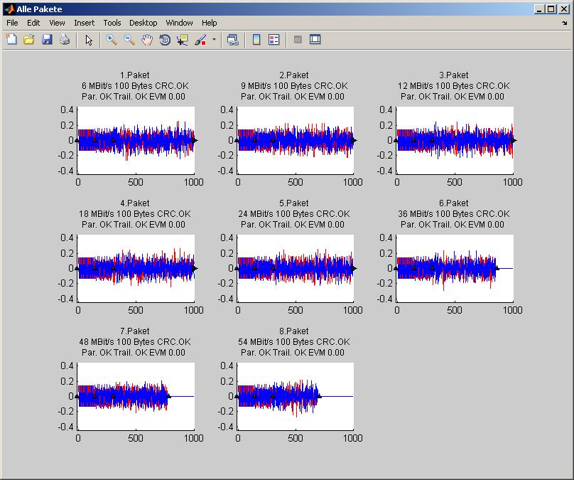
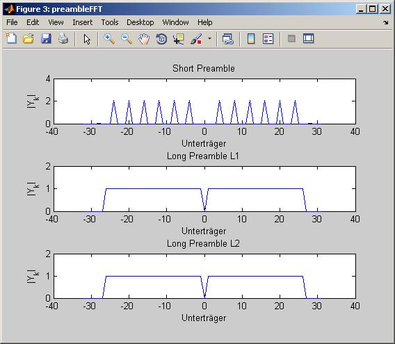
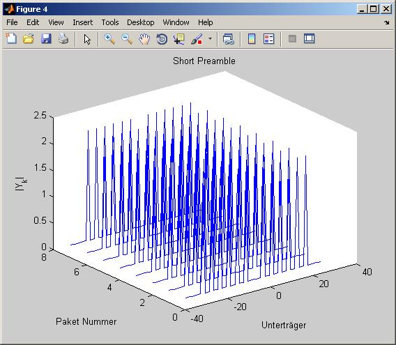
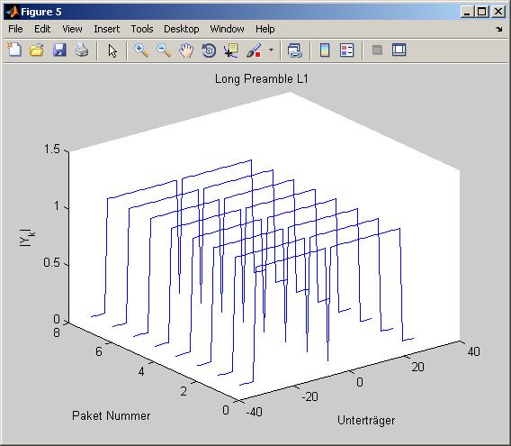
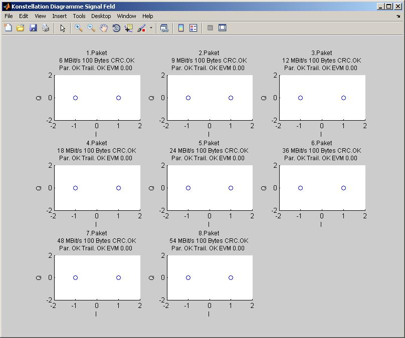
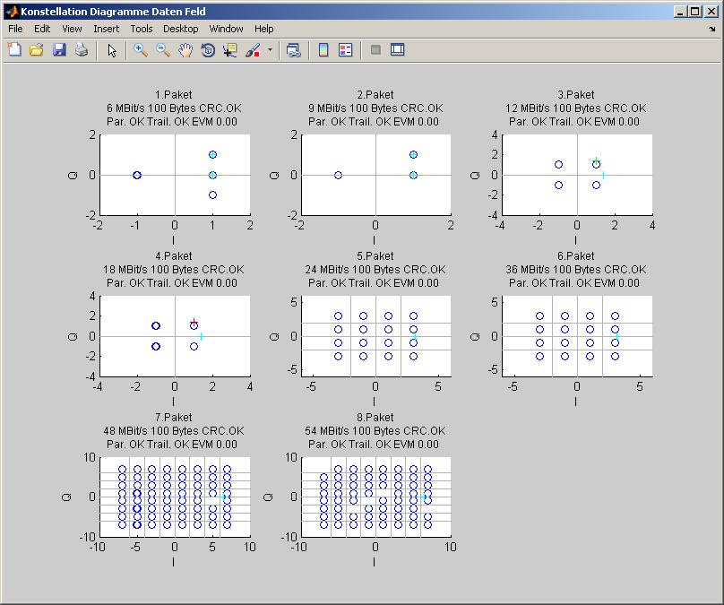
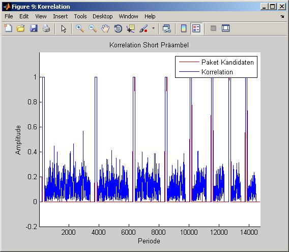
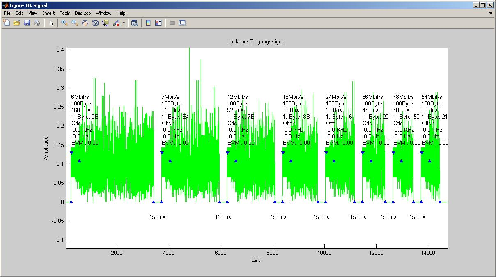
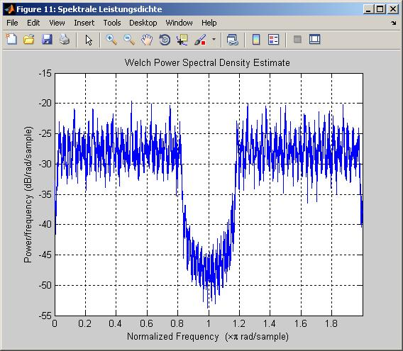

Contents
function [packets_80211a,allPackets] = analyse(signal,varargin)
% signal: zu anlaysierende Signal für .mat file >> 'namedesSignals' oder aus workspace value name % varargin: name des plots als string z.b 'constellation' oder alles 'all'-> analyse(signal,'all') if ischar(signal) load(signal); datei = whos('-file', signal); s = [ 'signal = ' datei.name ';' ]; eval(s); end init(); %konstanten laden [PacketPositions] = paket_finden(signal); %Pakete finden if isempty(PacketPositions) disp('...No Packets found!...'); return ; else PaketAnzahl=length(PacketPositions); disp(['===================',num2str(PaketAnzahl),' Packets found.','=================']); end [Packet,LongPreambleStart] = paket_korrektur (signal,PacketPositions); %pakete korrigieren [OFDMSymbols,SignalFieldPackets] = signal_field(PacketPositions,Packet,LongPreambleStart); % signal feld auswerten gültige symbole merken [DataPackets,CRC32] = data_field(PacketPositions,Packet,LongPreambleStart,OFDMSymbols,SignalFieldPackets);%daten feld auswerten
===================8 Packets found.================= 1.Paket ---> 35 Symbols Paketrate: 6Mbit | Paketlänge: 100 Byte | Modulation: 2 QAM CRC Check .............: CRC OK. Type: Daten | Subtype: QoS Data + CF-Ack To DS FromDS: Ad1:RA Ad2:TA Ad3:DA Ad4:SA wiederholung des gleichen nachricht WEP Duration : 22494 microsec. Receiver MAC: 588C1BD54745 Transmitter MAC: DE72A13A3A3A MAC3: 0AB70023C111 Fragment: 7 Sequenz: 3477 MAC4: F0ED43204383 Frame Body: 64 Byte ----------------------------------------------------------------- 2.Paket ---> 23 Symbols Paketrate: 9Mbit | Paketlänge: 100 Byte | Modulation: 2 QAM CRC Check .............: CRC OK. Type: Kontrol | Subtype: CF-End To DS FromDS: Ad1:RA Ad2:TA Ad3:DA Ad4:SA weitere fragmente der nachricht folgt ...weitere daten folgt Duration : AID in PS-Poll frames Receiver MAC: A5771C2911DA Transmitter MAC: 4A910C2E00C7 MAC3: 192AD6C1C079 Fragment: 1 Sequenz: 1913 MAC4: 2BB893A79F35 Frame Body: 66 Byte ----------------------------------------------------------------- 3.Paket ---> 18 Symbols Paketrate: 12Mbit | Paketlänge: 100 Byte | Modulation: 4 QAM CRC Check .............: CRC OK. Type: Daten | Subtype: CF-Ack + CF-Poll (no data) To DS FromDS: Ad1:RA = BSSID Ad2:TA = SA Ad3:DA wiederholung des gleichen nachricht Duration : Reserved Receiver MAC: C283F30BA539 Transmitter MAC: 5F1A019AF43A MAC3: DED24F9C73C5 Fragment: 8 Sequenz: 2353 Frame Body: 72 Byte ----------------------------------------------------------------- 4.Paket ---> 12 Symbols Paketrate: 18Mbit | Paketlänge: 100 Byte | Modulation: 4 QAM CRC Check .............: CRC OK. Type: Daten | Subtype: QoS Data To DS FromDS: Ad1:RA = BSSID Ad2:TA = SA Ad3:DA wiederholung des gleichen nachricht ...weitere daten folgt WEP Duration : 18862 microsec. Receiver MAC: 5FE78120ACCB Transmitter MAC: 16E9D94FA509 MAC3: A2D887C8A835 Fragment: 3 Sequenz: 3309 Frame Body: 72 Byte ----------------------------------------------------------------- 5.Paket ---> 9 Symbols Paketrate: 24Mbit | Paketlänge: 100 Byte | Modulation: 16 QAM CRC Check .............: CRC OK. Type: Kontrol | Subtype: Reserved To DS FromDS: Ad1:(RA = DA) Ad2:(TA = SA) Ad3:(BSSID) ...weitere daten folgt WEP Duration : Reserved Receiver MAC: 4314D9CC1D3B Transmitter MAC: D3B839A2F783 MAC3: 985F07BC6C6C Fragment: 6 Sequenz: 1296 Frame Body: 72 Byte ----------------------------------------------------------------- 6.Paket ---> 6 Symbols Paketrate: 36Mbit | Paketlänge: 100 Byte | Modulation: 16 QAM CRC Check .............: CRC OK. Type: Management | Subtype: Reassociation request To DS FromDS: Ad1:RA Ad2:TA Ad3:DA Ad4:SA weitere fragmente der nachricht folgt ...weitere daten folgt WEP Duration : AID in PS-Poll frames Receiver MAC: 95D6A0BA13FB Transmitter MAC: B5D81CDA3A39 MAC3: 63D3C882BEDD Fragment: 12 Sequenz: 2728 MAC4: 099A2EDED831 Frame Body: 66 Byte ----------------------------------------------------------------- 7.Paket ---> 5 Symbols Paketrate: 48Mbit | Paketlänge: 100 Byte | Modulation: 64 QAM CRC Check .............: CRC OK. Type: Management | Subtype: Probe response To DS FromDS: Ad1:RA = DA Ad2:TA = BSSID Ad3:SA wiederholung des gleichen nachricht ...weitere daten folgt Duration : 23330 microsec. Receiver MAC: 367463E66D7B Transmitter MAC: 4DE2DA49D726 MAC3: 36CAFA0EEC4B Fragment: 12 Sequenz: 2671 Frame Body: 72 Byte ----------------------------------------------------------------- 8.Paket ---> 4 Symbols Paketrate: 54Mbit | Paketlänge: 100 Byte | Modulation: 64 QAM CRC Check .............: CRC OK. Type: Management | Subtype: Reassociation request To DS FromDS: Ad1:RA = BSSID Ad2:TA = SA Ad3:DA weitere fragmente der nachricht folgt wiederholung des gleichen nachricht WEP Duration : 15029 microsec. Receiver MAC: B3A31C3F8304 Transmitter MAC: FD828EB83454 MAC3: 90D0C412A547 Fragment: 9 Sequenz: 3043 Frame Body: 72 Byte -----------------------------------------------------------------
Falls erwünscht alle Ergebnisse in ein Matlab Strukt speichern (in Workspace)
if nargout==1 packets_80211a.SignalFields = SignalFieldPackets'; packets_80211a.DataFields = DataPackets'; packets_80211a.FCS = CRC32'; end allPackets=[];
Nach Paketen Sortieren
if nargout==2 for i=1:PaketAnzahl s = [ 'allPackets.Packet' num2str(i) '.SignalField=SignalFieldPackets{' num2str(i) '};']; eval(s); s = [ 'allPackets.Packet' num2str(i) '.DataField=DataPackets{' num2str(i) '};']; eval(s); s = [ 'allPackets.Packet' num2str(i) '.FCSField=CRC32{' num2str(i) '};']; eval(s); end end
Plots Grafische Ausgaben
if nargin>1 for i=1:length(varargin) if strcmpi(varargin(i), 'constellation') plot_constellations(PacketPositions,OFDMSymbols,SignalFieldPackets); elseif strcmpi(varargin(i), 'packets') plot_PacketFinds(PacketPositions,LongPreambleStart,Packet,OFDMSymbols,SignalFieldPackets); elseif strcmpi(varargin(i), 'preamble') plot_preambleFFT(PacketPositions,Packet,LongPreambleStart); elseif strcmpi(varargin(i), 'correlation') plot_InputAndPreambleCorrelation(); elseif strcmpi(varargin(i), 'pwelch') plot_pwelch(); elseif strcmpi(varargin(i), 'input') plot_InputAndPackets(PacketPositions,LongPreambleStart,... Packet,OFDMSymbols, SignalFieldPackets,DataPackets); % cell2mat(varargin(i))==1 elseif (strcmpi(varargin(i), 'all')||strcmpi(varargin(i), 'plots')) && (length(varargin)==1) plot_PacketFinds(PacketPositions,LongPreambleStart,Packet,OFDMSymbols,SignalFieldPackets); plot_preambleFFT(PacketPositions,Packet,LongPreambleStart); plot_constellations(PacketPositions,OFDMSymbols,SignalFieldPackets); plot_InputAndPreambleCorrelation(); plot_InputAndPackets(PacketPositions,LongPreambleStart,... Packet,OFDMSymbols, SignalFieldPackets,DataPackets); plot_pwelch(); end end end        
end